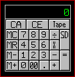

| My-T-Soft®: for Windows; Indestructible Keyboards and Indispensable Utilities; Version 1.80; User's Guide | ||
|---|---|---|
| Prev | Chapter 3. My-T-Soft Panels | Next |

The calculator is a standard four function calculator. To operate simply press the desired number, press an operation key, press the next number, and press an operation key or the total (=) key. You may then send the displayed number to the active window by pressing the SD (Send) button. While there is a number stored in memory, the calculator's display window frame will change color to indicate that memory has a value stored.
Calculator Tape
The Tape key will allow you to run a history of any calculations, just as on paper tape and then you may save it as a file, print it, or import it to another document. If you want to use the tape, it must be activated BEFORE any operations are performed. Click on the Tape button to activate. You may also click on the calculator display window to activate & deactivate the calculator tape. The calculator tape will automatically close if you close the Calculator Panel on My-T-Soft. If necessary, you will be asked if you wish to save any information recorded in the Tape.
The Calculator Tape window has a drop-down File Menu which has options to save the Tape as file, print, or open a previously saved tape. The drop-down Edit menu has the standard edit functions - Undo, Cut, Copy, and Paste.